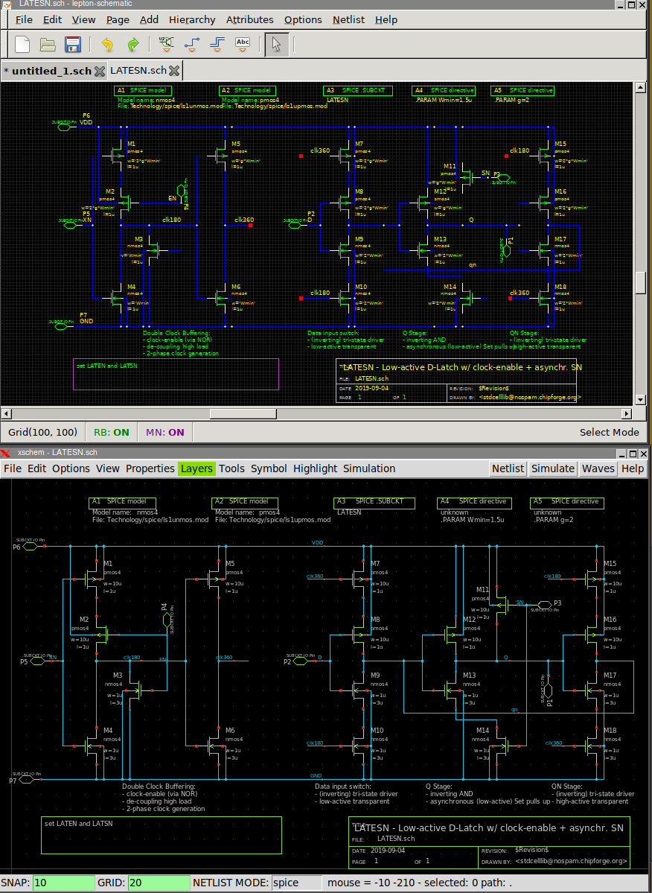
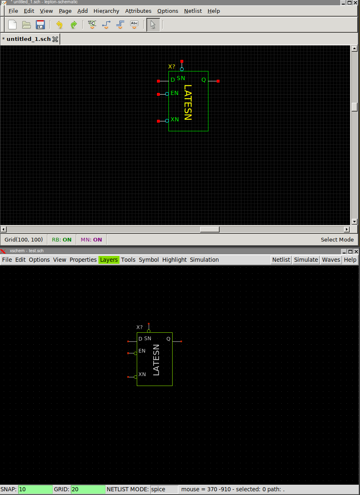

TUTORIAL: Translate GEDA gschem/lepton-schematic schematics and symbols to xschem
The gschemtoxschem.awk utility (installed in (install_root)/share/xschem) generates xschem schematic and symbol files from their GEDA equivalents.
First of all, note that xschem comes with all geda symbols already translated to xschem.
Create an empty directory where you want your xschem schematics/symbols, inside this directory create an xschemrc file with the following path added, if not already done in your ~/.xschem/xschemrc file:
append XSCHEM_LIBRARY_PATH :${XSCHEM_SHAREDIR}/../doc/xschem/gschem_import/sym
Next, in this directory create a convert.sh script and make it executable:
#!/bin/bash
# remove empty glob specifications *.sym or *.sch
shopt -s nullglob
for file in directory_with_geda_files/*.{sym,sch}
do
/path_to_xschem_install_root/share/xschem/gschemtoxschem.awk $file > $(basename -- $file)
done
Note that you have to set the correct path for gschemtoxschem.awk depending on your xschem installation
and set the correct path for the directory (directory_with_geda_files in above example) containing the geda files.
The current directory will be populated with xschem schematics/symbols with the same name as their GEDA equivalents.
Incidentally xschem and gschem use the same file extensions (.sym, .sch), so be careful not to mix xschem and gschem files.
Below an example of a schematic and a symbol shown both in xschem and lepton-schematic (gschem fork)

Notes for schematics targeted for spice simulations
Most of geda schematics do not define precise rules for spice netlisting.
primitive symbols are symbols that do not have a schematic representation,
examples are the nmos and pmos transistors in first schematic.
They should have a format property
that defines how the symbol should be translated to spice netlist.
See the relevant schem manual page.
Subcircuit symbols are symbols that translate to spice as a .subckt calls.
An example is the LATESN symbol in above picture.
Xschem convention is that subcircuit symbol instances have a name
attribute that begins with 'X' or 'x'. As with primitive symbols they also have a
format global attribute, but the type=subcircuit attribute
states it is a subcircuit instance. After producing the instance call
(for example X1 net1 net2 net3 ... subcircuit_name)) for all instances
of this symbol a .subckt expansion is also produced:
.subckt subcircuit_name pin1 pin2 pin3 ... ... ... .ends
After doing the conversion with gschemtoxschem.awk you should check your
schematics and symbols and make the necessary corrections.
In particular you should check that schematic pins match symbol pins, regarding pin name and direction.
Xschem standard way is to use
ipin.sym, opin.sym, iopin.sch for input, output, inout pins, respectively.
Following image shows the original converted schematic and the hand-modified schematic with the
proper pins. Note that VDD/GND pins have been removed
since the LATESN symbol does not have such supply pins.
In spice netlist VDD/GND to the subcircuit is in this particular case passed via net-assign.